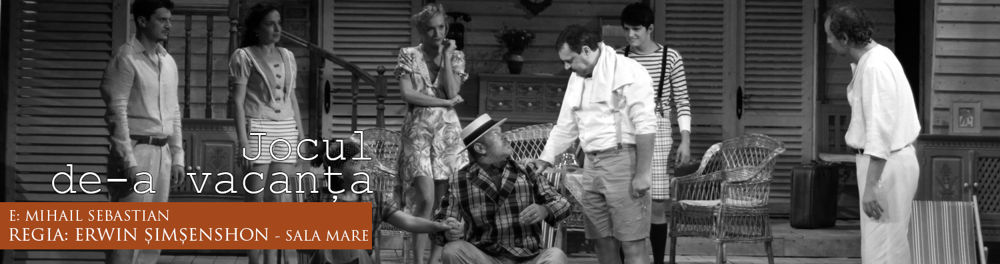
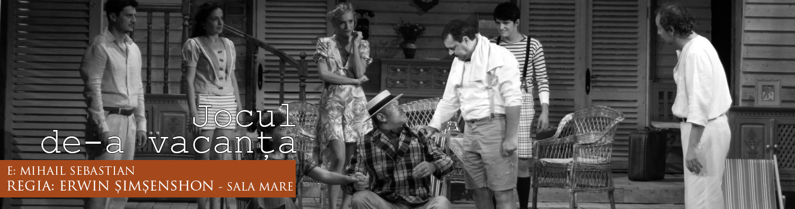

Teatrul Maria Filotti Brăila
• Bunica – opt femei de Robert Thomas , regia Radu Nichifor , 2008
• Mama - « Vânzătorul de iluzii » de Mihai Ispirescu, regia Radu Nichifor, 2007
• Mama - “Neînţelegerea" de A. Camus, regia Anca Cismaru, 1997
• Îngrijitoarea – “Nota zero la purtare” de O. Sava şi V. Stoenescu, regia Marius Popescu, 1995
• Bunica Jacques – “Jacques sau supunerea" de Eugen lonescu, regia Grigore Gonţa, 1993
• Doamna Gybs- “Oraşul nostru” de Thornton Wilder, regia Victor Moldovan, 1993
• Maria - “Noaptea Brâncoveanului" de Titu Constantin, regia George Motoi, 1993
• Adelina – “Pâinea şi circul" de Aurel Storin, regia Victor Moldovan, 1992
• Angela – “O seară la Union" de Liviu Domeanu, regia Victor Moldovan, 1992
• Berta – “Logodnicele aterizează la Paris" de Mark Camolletti, regia Marius Popescu, 1991
• Huberta – “Jourdain cel scrântit” de Mihail Bulgakm, regia Mihai Lungeanu, 1991
• Katarina – “Tot răul de la femei" de Franz Xavier Kroetz, regia Victor Ignat, 1990
• Maria – “Şi bunica dansează rock" de Ion Manoliu, regia Mihai Lungeanu, 1990
• Laura – “Ultimul set" de Marica Beligam, regia George Motoi, 1988
• Carola I – “Balustrada" de Paul Everac, regia Paul Everac, 1987
• Dorina – “Famllia” de Dina Cocea, regia Alexa Visarion, 1987
• Sora – “Aventura unei arhive” de Theodor Manescu, regia Constantin Codrescu, 1986
• Kalcina – “Vinovaţi fără vină” de A.N. Ostrovski, regia Marius Popescu, 1985
• Suzana – “Evantaiul” de Carlo Goldoni, regia Marius Popescu, 1985
• Veta – “O noapte furtunoasă" de I. L. Caragiale, regia George Custură
• Soţia – “Audienţă la consul" de Ion Brad, regia Constantin Codrescu, 1984
• Palaghia – “Roata” de Corneliu Ifrim, regia Constantin Codrescu, 1984
• 0 nevastă –“Încercare de zbor” de Jordan Radicikov, regia Constantin Codrescu, 1983
• Ea – “Într-un parc pe o bancă'" de Alexandr Ghelman, regia Radu Marin, 1983
• Mara - “Reţeta fericiril" de Aurel Baranga, regia Constantin Codrescu, 1983
• Vasiluţa –“Casa mare” de Ion Druţă, regia Gheorghe Miletineanu, 1982
• Lona - “Frunzele amăgitoarei neputinţi" de losif Naghiu, regia Gheorghe Miletineanu, 1982
• Nina - “Două iubiri” de Armen Zurabov, regia Nicolae Scarlat, 1981
• Catrina – “Morometil" dramatizare de L. Dorneanu după Marin Preda, regia Marius Popescu, 1981
• Andrea – “Cu căluşul în gură” de Alphonso Sastre, regia Constantin Codrescu, 1981
• Ecaterina - “Noaptea pe asfalt” de Theodor Mănescu, regia Gheorghe Miletineanu, 1980
• Tofana – “Patima roşie” de Mihail Sorbul, regia Bogdan Ulmu, 1979
• Ana – “Halucinaţia" de Ştefan Berciu, regia Marius Popescu, 1979
• Amalia – “A fost răpit un fotbalist" de Dan Stoica, regia Gheorghe Miletineanu, 1979
• Araminte – “Falsele destăinuiri" de Marivaux, regia Gheorghe Miletineanu, 1978
• Mimi – “Omul din baie” de Mircea Radu lacoban, regia Gheorghe Miletineanu, 1978
• Mucki - “Siciliana” de Aurel Baranga, regia Dumitru Dinulescu, 1977
• Irina - „A fi sau a nu fi rude" de Emil Braghinski, regia Marius Popescu, 1977
• Eliza Doolittle – “Pygmalion” de G.B. Shaw, regia Ion Dinescu, 1976
• Marchiza - “Don Carlos" de Fr. Schiller, regia Gheorghe Miletineanu, 1976
• Safia - “Tache, lanche şi Cadâr” de Victor Ion Popa, regia Marius Popescu, 1975
• D-na Toican – “Pisica sălbatică" de Ştefan Berciu, regia Petre Popescu, 1975
• Ortensia – “Hangiţa” de Carlo Goldoni, regia Laurenţiu Azimioară, 1972
• Fiokla - “Căsătoria" de N.V. Gogol, regia Dumitru Dinulescu, 1972
• Reporter - “Interesul general” de Aurel Baranga, regia Dumitru Dinulescu, 1971
• Nela - “Moştenitorul păcălit” de George Vlad, regia Ion Dinescu, 1971
• Geta - “Surorile Aman" de S. Cocărăscu, regia Ion Dinescu, 1970
• Concetta – “Nu-ţi plătesc!" de Eduardo de Filippo, regia Dumitru Dinulescu, 1970
• Stela Morzea - “Întâlnire cu îngerul" de Sidonia Drăguşanu, regia Mihai Berechet, 1969
• Elvira – “Vis de secătură" de Mircea Ştefănescu, regia Ion Dinescu, 1969
• Nerine – “Vicleniile lui Scapin” de Moliere, regia Laurenţiu Azimioară, 1969
• Montzi – “Moartea ultimului Golan" de Virgil Stoenescu, regia Dumitru Dinulescu, 1969
• Ismena – “Fedra" de Racine, regia Dumitru Dinulescu, 1969
• Teresa – “Şi soarele are pete" de Leopold Lahola, regia Dumitru Dinulescu, 1968
• Zinca – “Stan Păţitu” de George Vasilescu, regia Dumitru Dinulescu, 1968
• D-na Belous - “Neîncredere in foişor" de Nelu Ionescu, regia Ion Dinescu, 1967
• Adriana – “Burlacil" de George Carabin, regia Dumitru Dinulescu, 1967
• Lena – “Crivăţul de aseară” de L. Teodorescu, regia Cristian Munteanu, 1967
 
